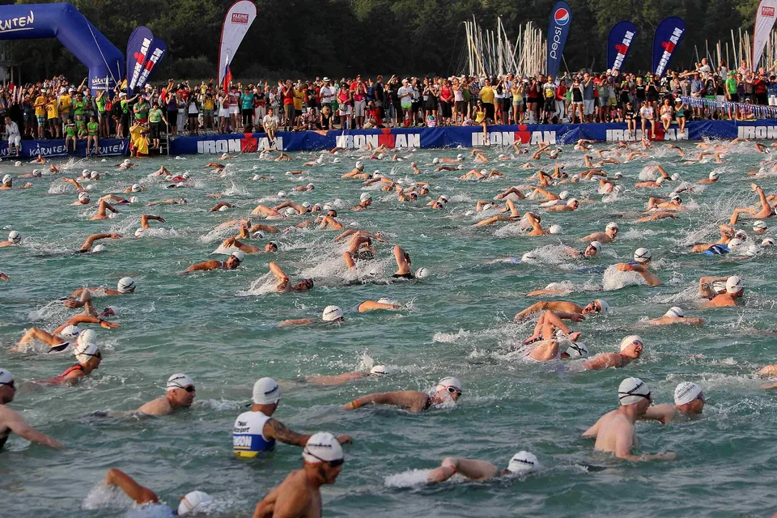

Freiwasserschwimmen: So startest du gut vorbereitet in See und Fluss
Schwimmstart beim Ironman Austria 2012 im Wörthersee. Foto: Johann Schwarz, Wikimedia Commons, CC BY 2.0
Klares Wasser, weiter Blick, kein Wenden an der Wand: Freiwasserschwimmen fühlt sich ganz anders an als das Becken – und für viele ist es die schönste Art zu schwimmen. Hier erfährst du, wie du gut vorbereitet in dein erstes Freiwasser-Event startest.
Was im Freiwasser anders ist
Kein Beckenrand, keine Bahnleine, oft kühleres Wasser und viele Menschen beim Start – daran gewöhnst du dich schnell, wenn du weißt, was dich erwartet.
Die Schweizerische Lebensrettungs-Gesellschaft (SLRG) bringt es in ihrer Grundregel auf den Punkt: In freie Gewässer – Flüsse, Weiher und Seen – sollen sich nur gute und geübte Schwimmerinnen und Schwimmer wagen[7]. Bei einem organisierten Event bist du bestens aufgehoben: Rettungsschwimmer, Boote und markierte Strecken gehören dazu. Dazu kommen die Grundregeln der Deutschen Lebens-Rettungs-Gesellschaft (DLRG)[3]:
- Nur ins Wasser gehen, wenn jemand helfen kann, falls es Probleme gibt – und Bescheid sagen, dass du schwimmen gehst.
- Vor dem Hineingehen abkühlen.
- Nur schwimmen, wenn du dich gut fühlst.
- Bei Blitz, Donner oder starkem Regen sofort aus dem Wasser.
Die ersten Minuten im kühlen Wasser
Wer in kühles Wasser geht, kennt das: Man schnappt nach Luft, atmet schnell, das Herz klopft. Fachleute nennen das Kälteschock. Die Reaktion ist ganz normal, erreicht ihren Höhepunkt in den ersten 30 Sekunden und klingt innerhalb der ersten zwei Minuten wieder ab[1].
Der britische Wetterdienst nennt gemeinsam mit den Rettungsorganisationen RNLI und RLSS UK Wasser unter 15 °C als Bereich, in dem ein Kälteschock auftreten kann. Die ersten Effekte dauern etwa 90 Sekunden. Die Empfehlung: ruhig bleiben, zurücklehnen und treiben lassen, den Kopf über Wasser[2].
Was das für dich heißt: Geh langsam ins Wasser statt hineinzuspringen, mach die ersten Züge ruhig und gib deiner Atmung Zeit, sich zu beruhigen. Wenn dir die Puste wegbleibt: kurz auf den Rücken drehen, durchatmen, dann weiter. Und je öfter du in kühlem Wasser schwimmst, desto weniger spürst du den Effekt – der Körper gewöhnt sich an die Bedingungen, die er kennt[1].
Neoprenanzug: Wann er Pflicht ist und wann verboten
Ein Neoprenanzug wärmt und gibt Auftrieb. Ob du ihn tragen darfst oder musst, hängt von der Wassertemperatur ab – und von den Regeln, nach denen die Veranstaltung läuft.
| Regelwerk | Kein Schwimmen | Neopren Pflicht | Neopren verboten |
|---|---|---|---|
| World Aquatics (Freiwasserrennen) | unter 16 °C | unter 18 °C | – |
| DTU-Triathlon, Altersklassen, bis 1.500 m | unter 14,0 °C | 14,0–15,9 °C | ab 22,0 °C |
| DTU-Triathlon, Altersklassen bis 59 Jahre, über 1.500 m | unter 14,0 °C | 14,0–15,9 °C | ab 24,6 °C |
World Aquatics misst zwei Stunden vor dem Start an drei Punkten der Strecke in 40 Zentimetern Tiefe[4]. Bei der Deutschen Triathlon Union gelten zusätzliche Regeln, etwa für Altersklassen ab 60 Jahren und bei kalter Luft[5].
Viele Seequerungen und Volksschwimmen legen eigene Regeln fest – manche haben getrennte Wertungen mit und ohne Neopren. Schau deshalb in die Ausschreibung. Und wenn du einen Neoprenanzug tragen willst: Probier ihn vorher im Freiwasser aus. Ein zu enger Anzug kann sich gerade in den ersten Minuten beklemmend anfühlen.
Start und Orientierung
Am Start schwimmen viele Menschen auf engem Raum – das ist der aufregendste Moment. Gute Veranstalter starten deshalb in Wellen und setzen gut sichtbare Bojen[1]. Für dich heißt das:
- Seitlich oder hinten starten: So schwimmst du dich ein, ohne Arme und Füße im Gesicht zu haben.
- Strecke vorher anschauen: Präg dir Bojen und markante Punkte am Ufer ein – einen Kirchturm, ein Haus, einen Baum.
- Regelmäßig nach vorn schauen: Heb alle paar Züge kurz den Kopf, um die nächste Boje anzupeilen. Übe das schon im Becken.
Training im Freiwasser: die Schwimmboje
Für das Training außerhalb von Veranstaltungen nutzen viele eine aufblasbare Schwimmboje. Ihr größter Vorteil liegt nach Angaben der DLRG in der besseren Sichtbarkeit – für Boote, Surfer und andere Badende. Ein Rettungsmittel ist sie aber nicht, vor allem nicht in Flüssen und Kanälen[6]. Am meisten Spaß macht das Training ohnehin zu zweit oder in der Gruppe – und am besten in Ufernähe.
Schwimmen im Fluss
Flussschwimmen hat seinen ganz eigenen Reiz – in Basel etwa ist das Rheinschwimmen eine Tradition. Der Kanton Basel-Stadt gibt dafür klare Hinweise: Große Schiffe können Schwimmenden nicht ausweichen, und die Sicht der Kapitäne ist eingeschränkt. Empfohlen wird, nicht in den Schifffahrtsrinnen zu schwimmen. Um festgemachte Boote, Bojen und Brückenpfeiler macht man einen Bogen[8]. Die SLRG ergänzt: je kälter das Wasser, desto kürzer sollte der Aufenthalt sein, weil Unterkühlung zu Muskelkrämpfen führen kann[7].
Bei einem organisierten Flussschwimmen sind Strecke, Ein- und Ausstieg und Sicherung festgelegt. Auf eigene Faust solltest du einen Fluss nur dort nutzen, wo es ausdrücklich erlaubt ist und wo du die Stelle kennst.
Wasserqualität und Blaualgen
Die gute Nachricht: In der Badesaison 2025 untersuchten die Behörden 2.291 deutsche Badegewässer. 98 Prozent erfüllten die Anforderungen der EU-Badegewässerrichtlinie, 91 Prozent erhielten sogar die Note „ausgezeichnet“. Mehr als die Hälfte der vorübergehenden Badeverbote ging auf Cyanobakterien („Blaualgen“) zurück[9]. Aktuelle Ergebnisse findest du bei den Bundesländern, über die Badegewässerkarte, auf die das Umweltbundesamt verweist, und für ganz Europa bei der Europäischen Umweltagentur[9][10].
Für Blaualgen nennt das Umweltbundesamt eine einfache Faustregel: Wer knietief im Wasser steht und die Füße wegen einer grün-blauen Trübung nicht mehr erkennen kann, sollte das Baden lieber sein lassen[11].
Nach dem Schwimmen: warm einpacken
Auch nach dem Ausstieg ist noch nicht alles vorbei. Nach dem Schwimmen kann dir noch eine Weile kälter werden – der Körper kühlt nach, auch wenn du schon draußen bist. Und der Kreislauf braucht einen Moment, um sich an das Land zu gewöhnen[1]. Steh deshalb langsam auf, trockne dich ab, zieh dich warm an und trink etwas Warmes. Wenn dir schwindelig wird, setz dich kurz hin.
Checkliste für dein erstes Freiwasser-Event
- Ausschreibung lesen: Strecke, Wassertemperatur, Neoprenregel, Zeitlimit
- Vorher mindestens ein paar Mal im Freiwasser trainieren – nie allein
- Neoprenanzug (falls erlaubt) vorher im Freiwasser testen
- Badekappe in Signalfarbe und Schwimmbrille, eine Ersatzbrille in der Tasche
- Vor dem Start die Bojen und Orientierungspunkte einprägen
- Langsam ins Wasser gehen, seitlich oder hinten starten
- Wenn die Puste wegbleibt: auf den Rücken drehen, durchatmen
- Warme Kleidung und ein warmes Getränk für danach
Fazit
Freiwasserschwimmen ist eines der schönsten Ausdauererlebnisse überhaupt – vorausgesetzt, du kennst die Besonderheiten: die ersten Minuten im kühlen Wasser, die Neoprenregeln, das Gewusel am Start und die Regeln im Fluss. Ein organisiertes Event mit Wasserrettung ist der perfekte Einstieg – such dir eins aus und spring rein. Langsam, versteht sich.
Finde dein erstes Freiwasser-Event
Seequerungen, Freiwasserschwimmen und Open-Water-Rennen ab 500 Metern in Deutschland, Österreich, der Schweiz und Südtirol.
Quellen
- Tipton M., Bradford C.: Moving in extreme environments: open water swimming in cold and warm water. Extrem Physiol Med 2014;3:12. PMC4052348
- Met Office (britischer Wetterdienst): Cold water shock – how to stay safe, 10.07.2025, mit Empfehlungen von RNLI und RLSS UK. metoffice.gov.uk
- DLRG: Die Baderegeln (Flyer, Stand 2024). dlrg.de (PDF)
- World Aquatics: Science supports safety – new research reinforces 16 °C threshold for open water swimming, 02.04.2026. worldaquatics.com
- Deutsche Triathlon Union: Sportordnung (SpO), Ausgabe 2026, § 21 Kälteschutzanzug. triathlondeutschland.de
- dpa: Schwimmbojen im Freiwasser – mehr Sichtbarkeit, aber kein Schutz vor Ertrinken, 28.07.2026 (mit Angaben der DLRG Rheinland-Pfalz). wochenblatt-reporter.de
- Schweizerische Lebensrettungs-Gesellschaft (SLRG): Aarekarte 2025. slrg.ch (PDF)
- Kanton Basel-Stadt, Justiz- und Sicherheitsdepartement: Mit richtigem Verhalten zum sicheren Schwimmvergnügen im Rhein, Medienmitteilung vom 10.07.2020. bs.ch
- Umweltbundesamt: Wasserqualität in Badegewässern. umweltbundesamt.de
- Europäische Umweltagentur: State of bathing water. eea.europa.eu
- Umweltbundesamt: Cyanobakterien – Tipps zum Baden (Postkarte, 2024). umweltbundesamt.de (PDF)
Alle Quellen abgerufen am 4. November 2026. Empfehlungen ohne Quellenangabe sind Erfahrungswerte.